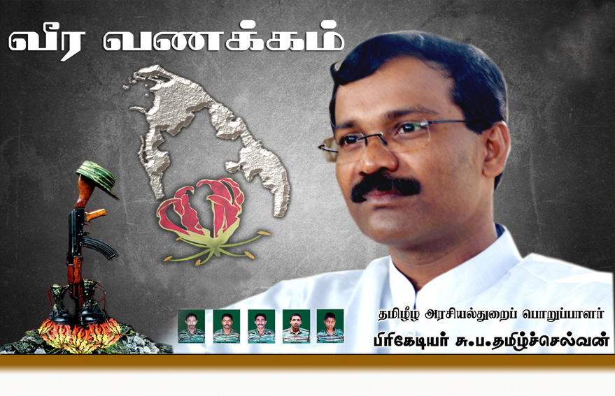

பிரிகேடியர் தமிழ்ச்செல்வன் வீர வரலாறு

உண்மைப் பெயர்: சுப்பையா பரமநாதன்
இயக்கப் பெயர்: பிரிகேடியர் தமிழ்ச்செல்வன் / தினேஷ்
வீரச்சாவு தேதி: 02.11.2007
வீரச்சாவடைந்த இடம்: கிளிநொச்சி அரசியல் பணிமனை
பிறப்பிடம்: சாவகச்சேரி, யாழ்ப்பாணம்
வரலாற்றுக்குறிப்பு
விடுதலைப் புலிகளின் சர்வதேச அரசியல் முகமாகவும், சமாதானப் பேச்சுவார்த்தைகளின் முதன்மைத் தூதராகவும் திகழ்ந்தவர் பிரிகேடியர் தமிழ்ச்செல்வன். ஆரம்பத்தில் யாழ் மாவட்டத் தளபதியாகக் களம்கண்டவர், பின்னர் அரசியல் பிரிவுப் பொறுப்பாளராக நியமிக்கப்பட்டார். இவரது எப்போதும் புன்னகை மாறாத முகம் சர்வதேச அரங்கில் தமிழீழப் போராட்டத்தின் அமைதி முகமாகப் பார்க்கப்பட்டது. சிறிலங்கா விமானப்படையின் பம்பர் குண்டுவீச்சில் தங்குமிடத்தில் வைத்து வீரச்சாவடைந்தார்.